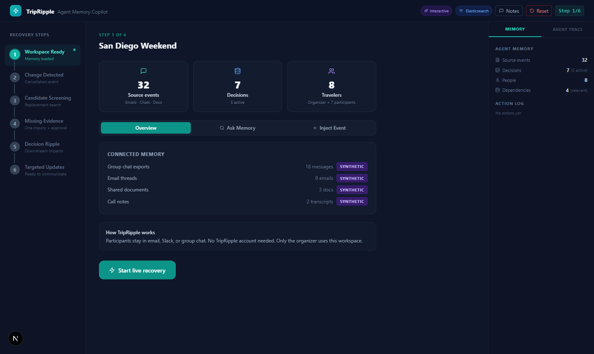
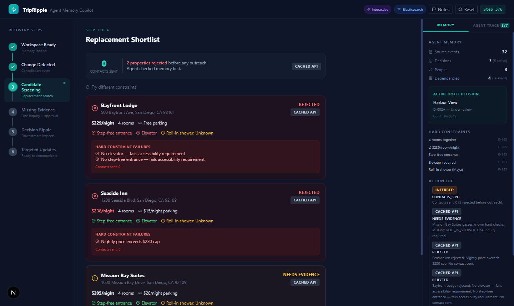
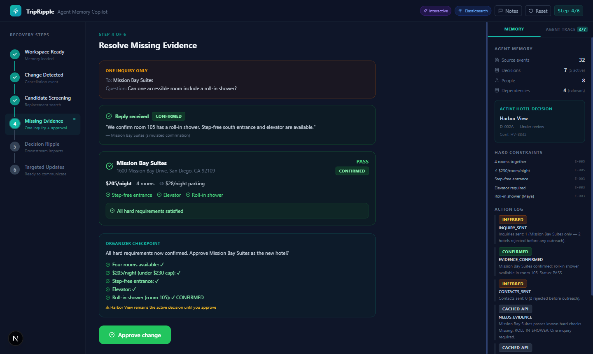
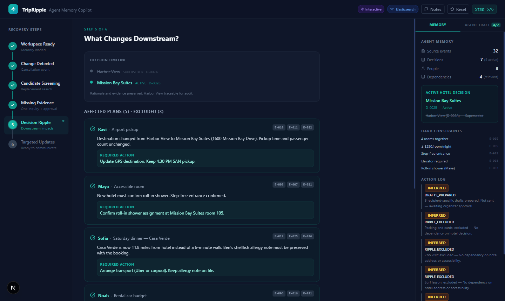
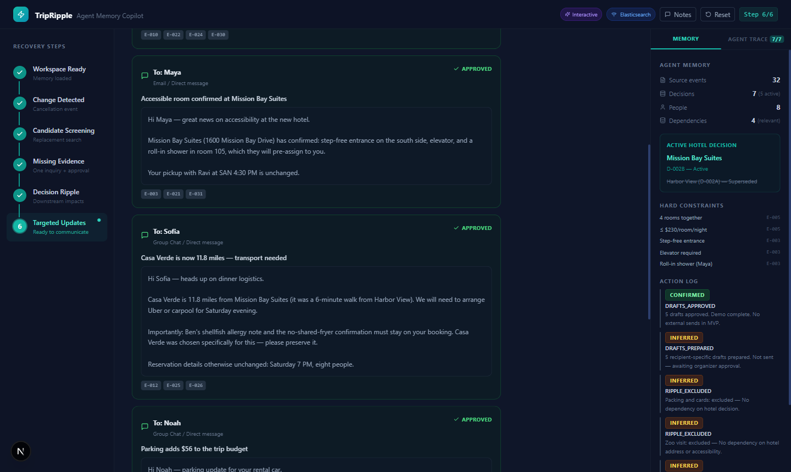
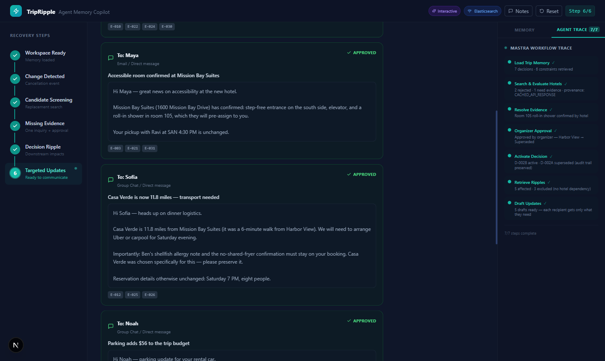
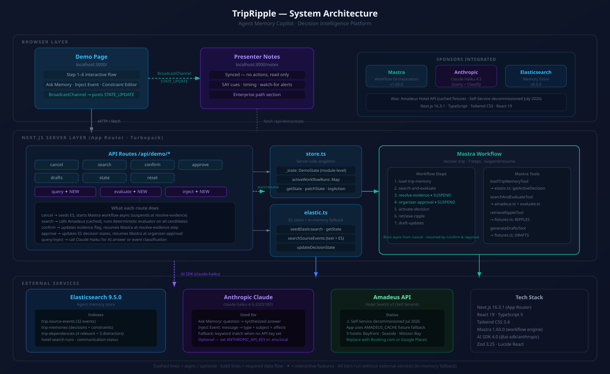
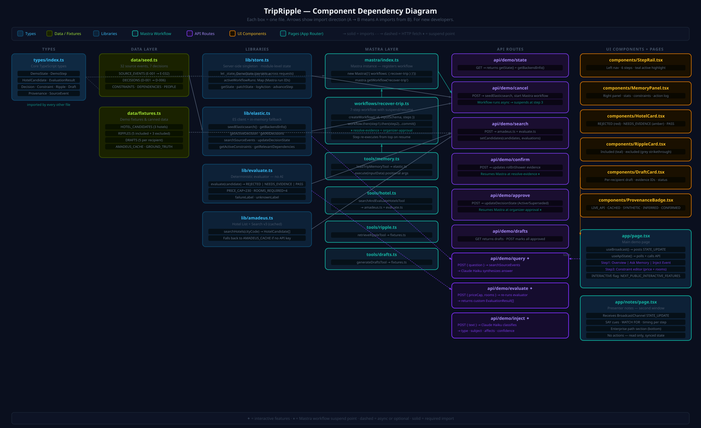

What It Does
Most AI assistants tell you what was decided. TripRipple stores why. When something changes — a hotel cancels, a vendor pulls out, a budget shifts — the agent already knows the constraints behind every open plan. It screens replacements against those constraints, asks exactly the questions it doesn’t already know, waits for a human to approve, and then notifies only the people whose plans depend on what changed.
The demo scenario: eight people, one hotel cancellation, 32 prior messages that contain the reasoning. No one had to explain the $230 price cap or Maya’s accessibility requirement again — it was already in Elasticsearch from when it was first discussed.
The Memory Layer
Five Elasticsearch indexes hold everything the agent needs to reason about a trip:
| Index | What’s Stored | Example |
|---|---|---|
trip-source-events | Raw messages: emails, chats, notes. Full text + metadata. | “Maya needs accessible room, roll-in shower” — email from Sofia |
trip-memories | Extracted decisions and constraints. Each decision has a state (Active / Superseded) and links to the source event it came from. | Decision D-001: Harbor View chosen. Constraint C-001: Accessibility required. |
trip-dependencies | Which plans depend on which decisions. The ripple graph. | Ravi’s airport pickup depends on hotel location. Maya’s room depends on accessibility decision. |
hotel-search-runs | Results of each screening run with per-candidate evaluation outcomes. | Bayfront rejected: no elevator. Seaside rejected: $238 > $230 cap. |
communication-status | Draft state per person — pending, sent, confirmed. | Ravi: draft pending. Maya: draft pending. |
Every decision that gets superseded stays in the index. It’s marked state: Superseded and linked to its replacement. Nothing is deleted — the history is the audit trail.
Search uses Elasticsearch function_score with exponential decay on the timestamp field. Recent events score higher. Scale: 7 days. This means a message from yesterday ranks above the same content from three weeks ago — which matters when people change their mind.
Every piece of information in the UI carries a provenance badge showing where it came from. SYNTHETIC_EVENT means it was seeded demo data. INFERRED means the agent derived it from a message. HUMAN_CONFIRMED means a person verified it during the approval step. This matters for trust — you can see exactly how confident to be in any given fact.
Who It Helps
The demo is travel planning. The pattern it demonstrates applies anywhere a decision has dependencies and those dependencies belong to different people.
The enterprise mapping is direct: hotel decision becomes a vendor or platform choice, accessibility constraint becomes a compliance rule, price cap becomes a budget constraint, trip plans become sprint items. The agent doesn’t care about the domain — it operates on the decision graph.
See It In Action
Six steps from cancellation to targeted drafts. Each tab shows a different moment in the recovery flow.






recover-trip workflow: Load Trip Memory → Trigger Cancellation → Screen Hotels → Resolve Evidence (suspend) → Approve Change → Map Ripples → Generate Drafts. The “Resolve Evidence” step suspends the workflow and waits for external confirmation before resuming — this is Mastra’s suspend/resume pattern. Steps show live status: pending, running (animated), suspended (amber), complete (teal).
Before / After: Ask Memory
The “Ask Memory” feature in Step 1 shows two answers side by side for the same question: one from a raw AI with no context, one from the agent with Elasticsearch memory. The difference is what the memory layer actually does.
Question asked: “Why did we choose the hotel near Mission Bay?”
The memory-grounded answer cites specific decision IDs and constraint IDs. It knows why Harbor View was the original choice, why it became unavailable, and which constraints the replacement had to satisfy. The generic answer guessed based on geography.
All Features
Memory & Search
Decision Memory
Every decision is stored with its rationale, source event, author, and state. Decisions are never deleted — superseded ones stay in the index, linked to what replaced them.
Decay Search
Elasticsearch function_score with exponential decay on timestamp. Recent events score higher. Scale: 7 days. Offset: 1 day. If someone changed their mind last week, the newer preference ranks above the older one.
Dependency Graph
Every plan is tagged with which decisions it depends on. When a decision changes, the graph tells the agent which plans ripple and which are unaffected — and the UI shows both lists explicitly.
Workflow
Mastra Workflow (7 steps)
The recover-trip workflow in Mastra 1.60.0: Load Memory → Trigger Cancellation → Screen Hotels → Resolve Evidence → Approve Change → Map Ripples → Generate Drafts. All 7 steps with live status updates.
Suspend & Resume
The Resolve Evidence step suspends the workflow and waits. When the hotel confirms room details, the workflow resumes from exactly where it paused. No polling loop, no state reconstruction.
Approval Gate
The active decision does not change until a human approves. You see the evidence, you see the candidates, you approve. Only then does the supersede write happen in Elasticsearch.
Interactive Features
Ask Memory
Ask any question about the trip. The agent searches Elasticsearch with decay, builds context from the top results, and answers. Shows the without-memory answer side by side for comparison.
Inject Event
Paste any new message into the chat. The agent classifies the type (Cancellation, Update, Request, Confirmation), extracts who it affects, and adds it to the source event index.
Constraint Editor
In the screening step, adjust the price cap slider or change the room count. The agent re-evaluates all candidates against the new constraints without touching the stored decisions.
How It Works
A single Next.js app: API routes handle state transitions, Mastra orchestrates the workflow, Elasticsearch holds memory, and OpenRouter supplies the AI reasoning. In-memory fallback runs everything if no Elasticsearch URL is configured.
-
1
Ingest & Extract
32 source events (emails, chats, notes) seeded into
trip-source-eventswith Voyage AI embeddings. Decisions and constraints extracted and stored separately intrip-memorieswith provenance links back to source events. -
2
Cancellation triggers Mastra workflow
The
/api/demo/cancelroute kicks off therecover-tripworkflow. Step 1 loads all active decisions and constraints from Elasticsearch. The workflow ID is stored in app state so the trace panel can poll it. -
3
Deterministic constraint evaluation
Each hotel candidate is evaluated against stored constraints by a pure function — no LLM involved. Price cap check, room count check, accessibility check. The function returns pass/fail per constraint and an overall recommendation. This keeps the screening predictable and auditable.
-
4
Targeted evidence request (suspend)
If one candidate passes all known constraints but has an unknown, the workflow suspends. One question is drafted to one hotel. The agent does not contact hotels that already failed — they were rejected before the question-drafting step.
-
5
Approval gate & decision supersede
The organizer sees the evidence and approves. On approval, the existing active decision is written as
state: Supersededin Elasticsearch and a new active decision is created pointing back to it. Nothing is deleted. -
6
Dependency ripple & targeted drafts
The dependency graph identifies which plans are affected. For each affected plan, a draft is generated with only the details that plan depends on. Plans with no hotel dependency are explicitly listed as excluded in the UI.
Architecture
Three layers: the Next.js UI and API routes on the left, the Mastra workflow and tool layer in the centre, and Elasticsearch plus external services on the right. Every memory read and write goes through Elasticsearch — in-memory arrays are a drop-in fallback for running without credentials.

Component Map
Each file in the project, its responsibility, and how they connect. The dashed arrows are paths that bypass the workflow — the constraint editor re-evaluates candidates directly without going through Mastra.

Tech Stack
| Library / Service | Role | Why This One |
|---|---|---|
Mastra 1.60.0 | Workflow orchestration | Native suspend/resume for the evidence step. createWorkflow + createStep + workflow.then(step).commit(). The hackathon requirement was to use Mastra — this is where it fit naturally. |
Elasticsearch Serverless | Memory store + decay search | 5 indexes, function_score with exp decay, sub-200ms queries. Serverless means no cluster management during a one-day build. |
Next.js 16.3.1 | Full-stack app | App Router, API routes, Turbopack. One deploy target for UI and backend. TypeScript throughout. |
OpenRouter | AI inference | OpenAI-compatible endpoint, anthropic/claude-3-haiku for fast classification and reasoning. Raw fetch — no SDK needed, no type conflicts. |
Tailwind CSS | Styling | Dark UI built quickly without writing custom CSS files. All spacing and color utilities inline. |
BroadcastChannel | Presenter sync | Main demo page broadcasts state updates; the notes page in a second window receives them. No WebSockets, no server involvement. |
What We Actually Learned
X-Title header to "TripRipple — Agent Memory Copilot" with a Unicode em dash (U+2014, decimal 8212). The fetch call threw TypeError: Cannot convert argument to a ByteString because the character at index 11 has a value of 8212 which is greater than 255. HTTP headers are ASCII only. The fix was a plain hyphen. We didn’t catch this during development because the local Next.js server handled it differently than the browser’s fetch.sort by timestamp ignores relevance entirely — the most recent message wins regardless of content. Elasticsearch’s function_score with exp decay multiplies the relevance score by a time factor. A highly relevant old message can still outrank a tangentially related recent one. That is what you want for a memory layer: recent preferences win when content is otherwise equal, but a specific constraint stated three weeks ago still surfaces for a specific query about that constraint.suspend() — that data goes into the workflow’s pending input. The resume call needs to provide the confirmation data explicitly. We initially assumed suspend saved state and resume would restore it. It doesn’t work that way. The resumeData flows in through the step’s input on the resume invocation.exp function on timestamp requires ISO 8601 date strings in the indexed documents — not Unix timestamps, not JavaScript Date objects. Our seed data used ISO strings, but it was easy to imagine a case where it wouldn’t.The Team
Three people. Built over one hackathon day. The travel scenario was deliberate — it’s concrete enough to demo in two minutes and abstract enough that you can see the enterprise pattern underneath.
Get Started
Clone the repo, copy .env.example to .env.local and fill in your keys, then run the seed script to populate Elasticsearch. The app falls back to in-memory data if no Elasticsearch URL is set.
Open http://localhost:3000 for the demo and http://localhost:3000/notes in a second window for presenter notes. The notes page syncs automatically with the demo via BroadcastChannel.